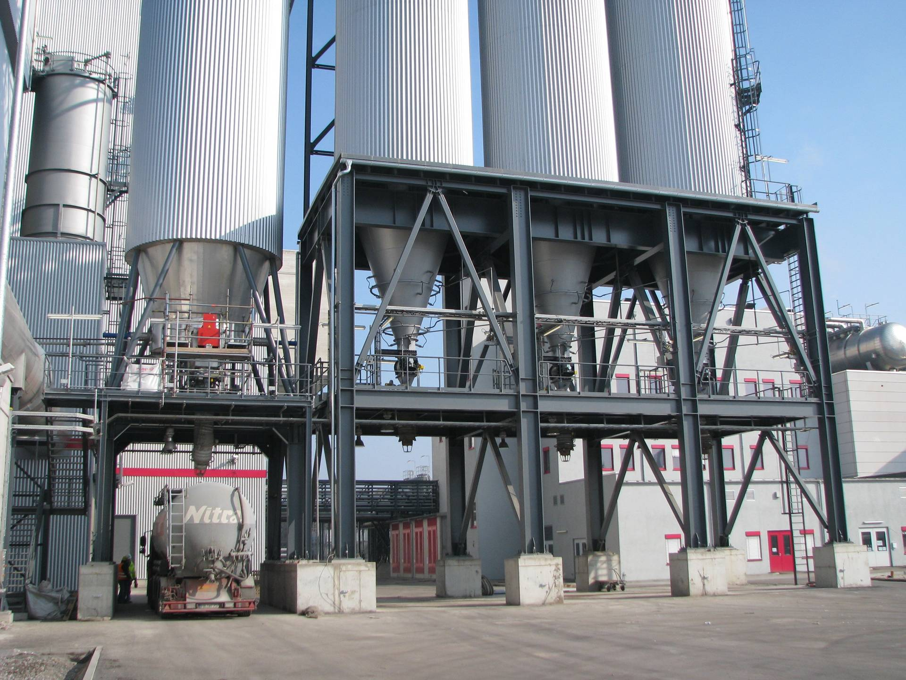
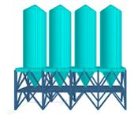
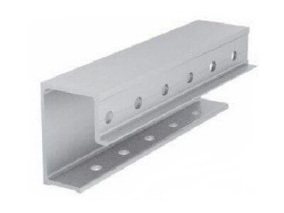
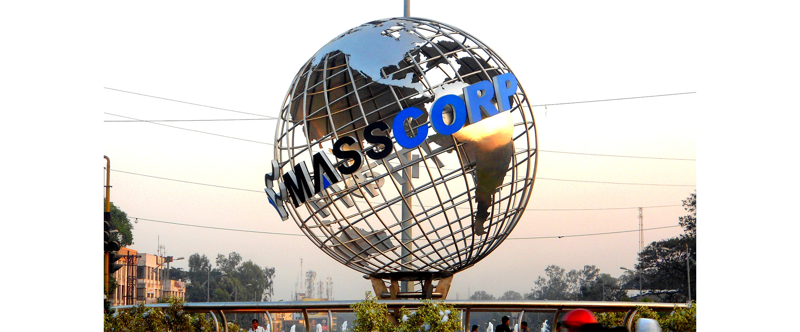

Case study | Industrial steel
Heavy steel support structures with fabrication-ready detail.



Silo support framing, bracing, and connection checks.
My early structural design work at Bharti Engineering focused on heavy industrial steel structures, including plate-blending silo support systems for Reliance Industries Ltd. work in Jamnagar, Gujarat. Each silo support was designed for approximately 640 tons, so the work depended on clear load paths, bracing behavior, and fabrication-ready connection documentation.
The connection scope included bolt, weld, plate, bracing, and anchorage checks using STAAD Pro, Tekla Structures, Descon Win, and Descon Brace. The output connected analysis reactions to member geometry, connection design, fabrication drawings, client submission, and third-party verification.
- Designed large-capacity steel support framing, bracing, plates, welds, bolts, and anchorage details.
- Developed steel connection designs using Descon Win and Descon Brace for bolt, weld, plate, and braced-frame checks.
- Coordinated STAAD Pro analysis reactions with Tekla Structures modeling and fabrication drawings.
- Applied AISC 360-05 LRFD, AISC 341-05 seismic provisions, AISC connection guidance, and BS 5950-1:2000 design logic.

